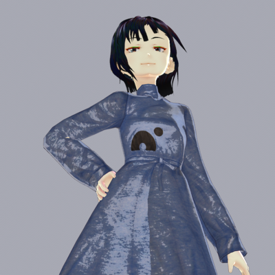

Written by
Koya.S
on
on
Nanomeにグッズを頂いた
Nanomeから色々いただきました。
最近、この記事とか、この記事とかにあるように、このソフトで大変楽しませていただいてます。
いただいたグッズ（ステッカーとかシャツとか、他にも）、周りの人にひととおり見せびらかしてたのですが、なんかもったいなくてTシャツが着れない。
なので、写真撮ってテクスチャにしてみた。

なんか偉そう・・・
余談
Nanomeをどう読むのか（私の周りで局所的に）議論になっている。
私は「なのめ」って読んでたんだけど、「なのーむ」では？という指摘があった。
たしかに。Genome Proteome Transcriptomeでomeなのかもしれない。
けどなんか「なのめ」のほうが可愛くないですか？
話は変わりますが、いま「なのめ」の使い方を色々模索しています。
Links
- Nanome
- ブログでタンパク質工学のこと話題にしていました
- なんか私がおる(紹介いただきありがとうございます)
- Vroid Studio (for texture modification)